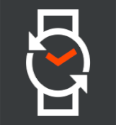
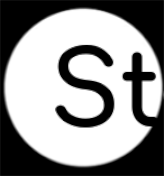
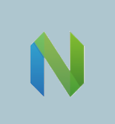

Portfolio

RebbleOS
Open source operating system for low-power smartwatches

Stanivision
Where the future is being made today

Neovim
Vim-fork focused on extensibility and usability

NASA LEC
Senior design project that's out of this world